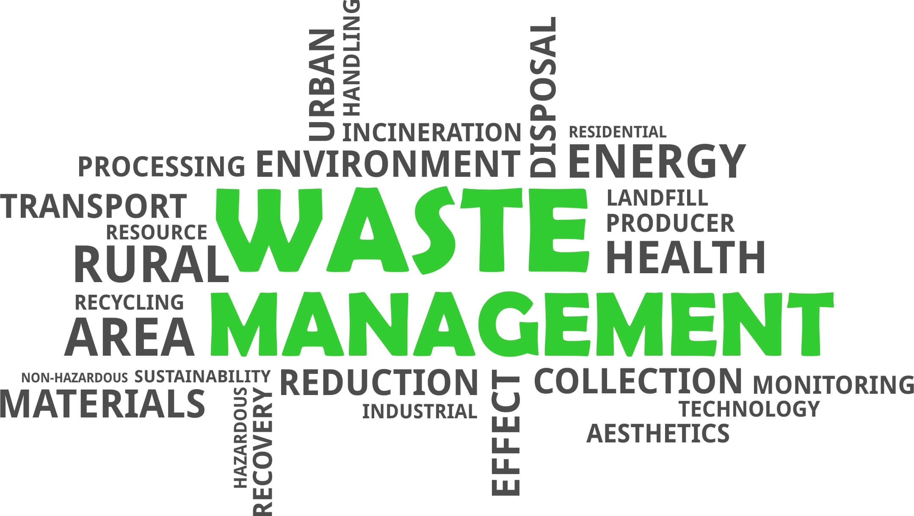

Waste Management
Efficient waste management is paramount for safeguarding our environment and public health. By reducing waste generation, promoting recycling, and responsibly disposing of hazardous materials, we can minimize pollution, conserve resources, and mitigate the impacts of climate change. Embracing sustainable waste management practices is essential for creating a healthier and more resilient planet for current and future generations.
Importance of efficient waste management
Welcome to our website dedicated to exploring the importance of efficient waste management systems. In a world facing ever-growing environmental challenges, the way we handle waste plays a crucial role in preserving our planet for future generations.
Effective waste management is more than just collecting and disposing of trash. It encompasses a comprehensive approach to minimizing waste generation, maximizing recycling and reuse opportunities, and ensuring the safe and responsible disposal of hazardous materials.
The consequences of inadequate waste management are far-reaching, impacting not only the environment but also public health, economy, and social well-being. From pollution of air, water, and soil to the depletion of natural resources and the proliferation of health risks, poorly managed waste poses significant threats to ecosystems and human communities alike.
Therefore, establishing efficient waste management systems is essential for mitigating these risks and promoting sustainable development. By reducing the amount of waste sent to landfills, recycling valuable materials, and implementing innovative waste-to-energy solutions, we can minimize our ecological footprint and move towards a more circular economy.
Through this website, we aim to raise awareness about the importance of proper waste management practices, provide valuable information and resources, and inspire individuals, businesses, and communities to take meaningful actions towards a cleaner, healthier, and more sustainable future. Join us in our mission to create a world where waste is no longer a problem but a valuable resource for the benefit of all.
Chemical Waste

This includes substances such as solvents, acids, pesticides, and cleaning agents that are toxic, flammable, corrosive, or reactive. Improper disposal of chemical waste can contaminate soil, water, and air, leading to environmental pollution and adverse health effects.
Environmental Risks
Chemical waste can contaminate soil, water sources, and the atmosphere through spills, leaks, or improper disposal. This contamination can disrupt ecosystems, harm wildlife, and degrade natural habitats.
Health Risks
Exposure to toxic chemicals in the environment or workplace can lead to acute or chronic health effects, including respiratory problems, neurological disorders, cancer, and reproductive issues.
Electronic Waste (E-Waste)

E-waste consists of discarded electronic devices like computers, smartphones, and appliances. These products contain hazardous materials such as lead, mercury, and cadmium, which can leach into the environment if not recycled or disposed of correctly. Recycling e-waste helps recover valuable resources and reduces the risk of toxic exposure.
Environmental Risks
Improper disposal of e-waste, such as landfilling or incineration, can release hazardous substances like lead, mercury, and brominated flame retardants into the environment. These toxins can pollute soil, water, and air, posing risks to ecosystems and human health.
Health Risks
Direct exposure to hazardous materials in e-waste or inhalation of toxic fumes during recycling or dismantling processes can cause respiratory problems, skin disorders, neurological damage, and other health issues.